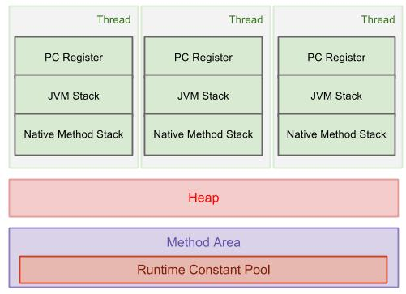

《深入理解Java虚拟机 JVM高级特性与最佳实践》 第二章 Java内存区域与内存溢出异常
运行时的数据区域

程序计数器
- 程序计数器（Program Counter Register）是一块比较小的内存空间，它可以看作是当前线程所执行的字节码的行号指示器；
- PCR为线程私有内存；
- 是唯一一个在Java虚拟机规范中没有规定任何OOM情况的区域；
Java虚拟机栈

- Java虚拟机栈（Java Virtual Machine Stacks）描述的是Java方法执行的内存模型：每个方法在在执行的同时都会创建一个栈帧（Stack Frame）用于存储
局部变量表、操作数栈、动态链接、方法接口等信息。每个方法从调用直至执行完成的过程，就对应着一个栈帧在虚拟机栈中入栈出栈的过程。 - Java虚拟机栈也是线程私有，它的生命周期与线程相同。
- Java内存区常分为堆内存（Heap）和栈内存（Stack）；
- OOM情况：（1）线程请求的栈深度>虚拟机所运行的最大深度；（2）虚拟机动态扩展时无法申请到足够的内存
本地方法栈
 本地方法栈（Native Method Stack）与虚拟机所发挥的作用非常相似的，他们之间的区别不过是虚拟机栈为虚拟机执行Java方法（也就是字节码）服务，而本地方法栈则为虚拟机所使用的Native方法服务。
本地方法栈（Native Method Stack）与虚拟机所发挥的作用非常相似的，他们之间的区别不过是虚拟机栈为虚拟机执行Java方法（也就是字节码）服务，而本地方法栈则为虚拟机所使用的Native方法服务。
- HotSpot虚拟机把本地方法栈和虚拟机栈合二为一；
- 此区域会抛StackOverflowError 和 OutofMemoryError异常
Java堆
 Java堆（Java Heap）是Java虚拟机所管理的内存中最大的一块，Java Heap是所有线程共享的一块内存区域，在VM启动时创建。
Java堆（Java Heap）是Java虚拟机所管理的内存中最大的一块，Java Heap是所有线程共享的一块内存区域，在VM启动时创建。
所有的对象实例以及数组都要在堆上分配（不绝对：栈上分配、标量替换优化技术）；- Java堆是垃圾收集器管理的主要区域，也可称做GC堆（Garbage Collected Heap）
- 从内存回收的角度，现代收集器基本都采用分代收集算法，Java Heap可细分为新生代和老年代，再细致可分为Eden空间、From Survivor空间、To Survivor空间等—>更好回收内存。
- 从内存分配的角度，线程共享的Java堆中可能分出多个线程私有的分配缓存区（TLAB：Thread Local Allocation Buffer）—>更快分配内存。
- Java堆出于逻辑连续的内存空间中，物理上可不连续，如磁盘空间一样；
- Java堆在实现上可时，可以实现成固定大小的，也可以按照可扩展实现（-Xmx和-Xms控制）；
- OOM情况：堆中没有内存完成实例分配，堆也无法再扩展时
方法区
方法区（Method Area）与Java堆一样，是各个线程共享的内存区域，它用于存储已被虚拟机加载的类信息、常量、静态变量、即时编译器编译后的代码等数据。
- 也称为永久代（Permanent Generation）但随着Java8的到来，已放弃永久代改为采用Native Memory来实现方法区的规划。
- 此区域回收目标主要是针对常量池的回收和对类型的卸载。
运行时常量池
 运行时常量池（Runtime Constants Pool）是方法区的一部分
运行时常量池（Runtime Constants Pool）是方法区的一部分
- Class文件中除了有
类的版本、字段、方法、接口等描述的信息外，还有一项信息是常量池（Constant Pool Table）,用于存放编译期生成的各种字面量和符号引用，这部分内容将在类加载后进入方法区的运行时常量池中存放。
直接内存
直接内存（Direct Memory）并不是虚拟机运行时数据区的一部分，也不是虚拟机规范中定义的内存区域。
- 能在一些场景中显著提高性能，因为避免了在Java堆和Native堆中来回复制数据。
- 直接内存的分配不会受到Java堆大小的限制，但会收到本机总内存（RAM以及SWAP/分页文件）大小以及处理器寻址空间的限制。
- 设置Xmx等参数信息时注意不能忽略直接内存，不然会引起OOM。
HotSpot虚拟机
对象的创建
为新生对象分配内存的分配方式由Java堆是否规整决定，而Java堆是否规整又由所采用的垃圾回收器是否带有压缩整理功能决定。
- 指针碰撞（Bump the Pointer）分配方式：Serial、ParNew等带有Compact过程的收集器
- 空闲列表（Free List）分配方式：类CMS这种基于Mark-Sweep算法的收集器
- 对分配内存空间的动作进行同步处理—-VM采用CAS配上失败重试的方式保证更新操作的原子性；
- 本地线程分配缓冲（Thread Local Allocation Buffer,TLAB）：把内存分配动作按线程划分在不同空间中进行，即每个线程在Java堆中预先分配一小块内存，虚拟机是否启用TLAB，可由-XX:+/-UseTLAB参数设定；
对象的内存布局
 对象在内存中存储的布局可以分为3块区域：对象头（Header）、实例数据（Instance Data）、和对齐填充（Padding）;
对象在内存中存储的布局可以分为3块区域：对象头（Header）、实例数据（Instance Data）、和对齐填充（Padding）;
- 对象头包含2部分信息
-
- Mark Word,存储对象自身的运行时数据（如哈希码、GC分代年龄、锁状态标志、线程持有的锁、偏向线程ID、偏向时间戳）；由于对象头与对象自身定义的数据存储大小无关，考虑到VM的空间效率，Mark Word被设计成非固定的数据结构以便在极小的空间内存储尽量多的信息，他会根据对象的状态复用自己的存储空间。
- 类型指针，即对象指向它的类元数据的指针，VM通过这个指针来确定这个对象是哪个类的实例。
实例数据是对象真正存储的有效信息，也似乎程序代码中定义的各种类型的字段内容。
- 对齐填充，并不必然存在，没有特别含义，仅仅起占位符的作用，8byte对齐。
对象的访问定位
Java程序需要通过栈上的reference数据来操作堆上的具体对象，对象访问方法取决于VM实现而定，目前主流访问方式有使用句柄和直接指针2种：
句柄访问
Java堆中划分出一块内存作为句柄池，reference中存储对象的句柄地址，句柄中包含对象实例数据与类型数据各自的具体地址信息；
直接指针访问
Java堆对象的布局中必须考虑如何放置访问类型数据的相关信息，reference中存储对象地址； 
两种访问方式各有优势
- 使用句柄访问最大的好处是reference中存储的是稳定的句柄地址，在对象被移动（GC时移动对象是很普遍的行为）时只会改变句柄中的实例数据指针，而reference本身不需要修改；
- 使用直接指针访问方式的最大好处是速度更快，它节省了一次指针定位的时间开销，由于对象访问在Java中非常频繁，因此这类开销积少成多后也是一项非常可观的执行成本；
- HotSpot虚拟机采用指针访问方式进行对象访问，从整个软件开发范围看，各种语言和框架使用句柄来访问的情况也非常常见。
实战OOM异常
Java堆溢出
Java堆用于存储对象实例，只要不断创建对象，并保证GC Roots到对象之间有可达路径来避免回收机制清除这些对象，那么当对象数量到达最大堆的容量限制后就会产生OOM。
控制参数
- -Xms：堆最小值
- -Xmx：堆最大值
- -XX:+HeapDumpOnOutOfMemoryError：让虚拟机在出现OOM异常时Dump出当前内存堆转储快照以便事后进行分析
异常信息
Java.lang.OutOfMemory + Java Heap Space
解决办法
以内存映像分析工具（Eclipse Memory Analyzer）对Dump出来的堆转储快照进行分析，重点是确认内存中的对象是否是必要的，即判断是内存泄漏（Memory Leak）还是内存溢出（Memory Overflow）
- 如果是内存泄漏：通过工具查看泄漏对象到GC Roots的引用链，掌握泄漏对象的类型信息及引用链的信息后可较准确的定位代码位置；
- 如果是内存溢出：可通过检查VM的堆参数（-Xmx和-Xms），与机器物理内存对比看是否可以调大；从代码检查是否存在某些对象生命周期过长，持有状态时间过长的情况，尝试减少程序运行期的内存消耗
虚拟机栈和本地方法栈溢出
控制参数
HotSpot虚拟机不区分虚拟机栈和本地方法栈，
- -Xoss（设置本地方法栈大小）：参数设置无效;
- -Xss（栈容量）;
异常信息
关于虚拟机栈和本地方法栈，在Java虚拟机规范中描述了两种异常：
- 如果线程请求的栈深度 > 虚拟机所允许的最大深度，抛出
StackOverFlowError异常 - 如果虚拟机在扩展栈时无法申请到足够的内存空间，抛出
OutOfMemoryError异常
解决办法
操作系统分配给每个进程的内存是有限制的，如32位Windwos限制为2G。虚拟机提供了参数来控制Java堆和方法区这两部分内存的最大值， 虚拟机栈和本地方法栈可瓜分的剩余内存=2G（操作系统限制）-Xmx（最大堆容量）-MaxPermSize（最大方法区容量）-虚拟机进程本身耗费内存；程序计数器消耗内存很小，可以忽略。
- 每个线程分配到的栈容量越大，可以建立的线程数就越少，建立线程时候就越容易耗尽剩余内存。
- 按虚拟机默认参数，栈深度在大多数情况下达到1000~2000完全没问题，对于正常方法调用（包括递归），这个深度应该完全够用；但如果是建立过多线程导致内存溢出，在不能减少线程数或者更换X64位虚拟机的情况下，就只能通过减少最大堆和减少栈容量来换取更多的线程
方法区和运行时常量区溢出
运行时常量池是方法区的一部分，因此这两个区域的溢出可放在一起进行。
控制参数
- -XX:PermSize（方法区最小容量）
- -XX:MaxPermSize （方法区最大容量）
异常信息
OutOfMemoryError 后面跟随PermGen space 说明运行时常量池属于方法区（HotSpot虚拟机中的永久代）的一部分
本机直接内存溢出
控制参数
DirectMemory容量可通过-XX:MaxDirectMemorySize指定，不指定默认与-Xmx(Java堆最大值)一样。
异常信息
由DirectMemory导致的内存溢出，一个明显的特征是在Heap Dump文件中不会看见明显的异常； 如果发现OOM之后Dump文件很小，而程序又直接或简介使用了NIO，可以考虑是不是这方面的原因。